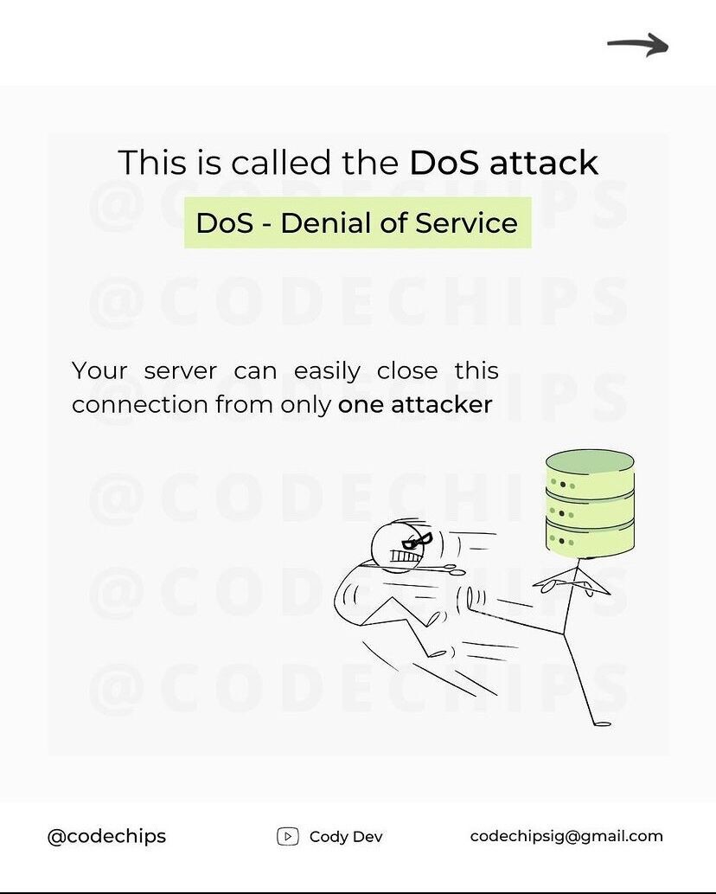
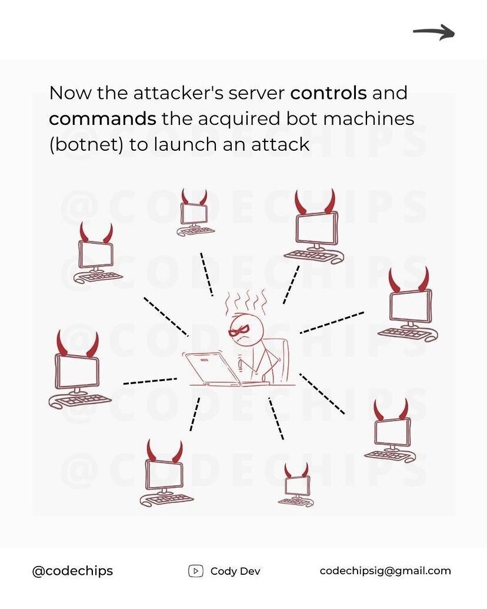
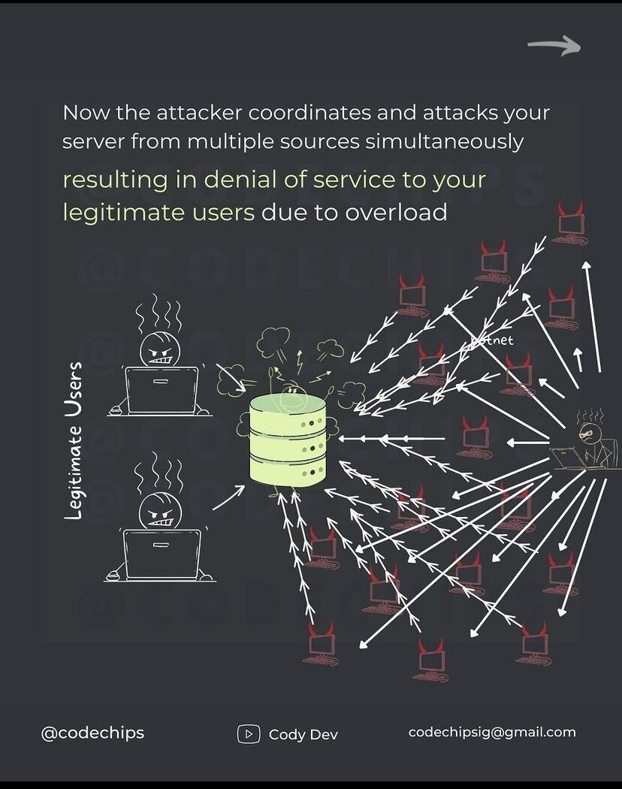
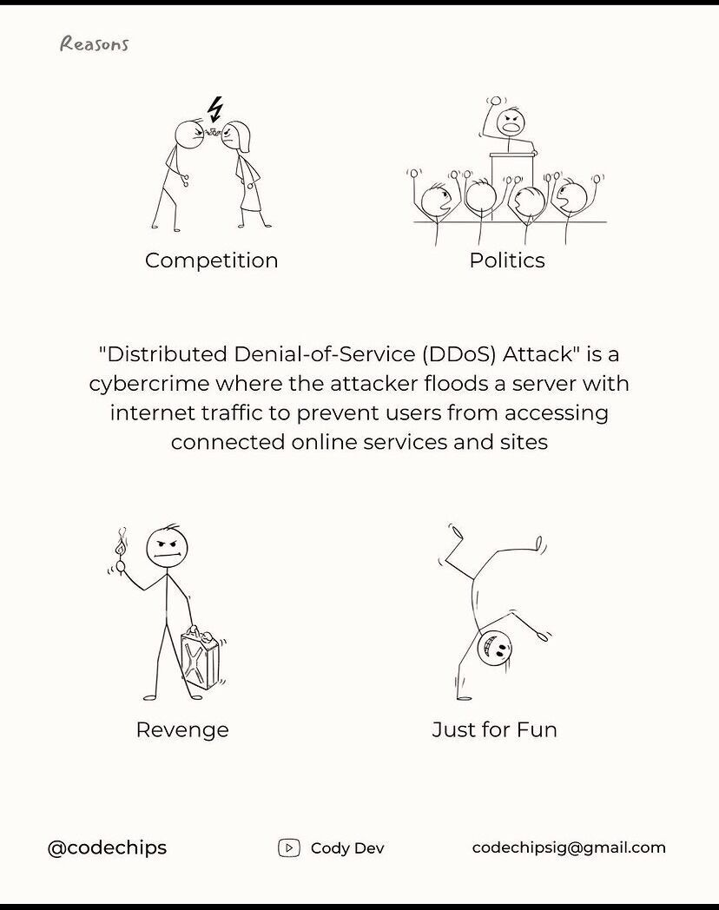

How Ddos Attacks Occur
Let us say you own an ecommerce website and everything is going great.
However, you may not be aware of any types of threat actors, ranging from individual criminal hackers to organized crime rings and government agencies, carry out DDoS attacks. In certain situations -- often ones related to poor coding, missing patches or unstable systems -- even legitimate, uncoordinated requests to target systems can look like a DDoS attack when they are just coincidental lapses in system performance.

Start of an Attack
In a typical DDoS attack, the assailant exploits a vulnerability in one computer system, making it the DDoS master. The attack master system identifies other vulnerable systems and gains control of them by infecting them with malware or bypassing the authentication controls through methods like guessing the default password on a widely used system or device.

The Attack occurs
The target of a DDoS attack is not always the sole victim because DDoS attacks involve and affect many devices. The devices used to route malicious traffic to the target may also suffer a degradation of service, even if they aren't the main target.
Your server might handle the attack when there is only one computer or couple of computers but not thousands!!!

What is Bot Army
A computer or network device under the control of an intruder is known as a zombie, or bot. The attacker creates what is called a command-and-control server to command the network of bots, also called a botnet. The person in control of a botnet is referred to as the botmaster. That term has also been used to refer to the first system recruited into a botnet because it is used to control the spread and activity of other systems in the botnet.
Botnets can be composed of almost any number of bots; botnets with tens or hundreds of thousands of nodes have become increasingly common. There may not be an upper limit to their size. Once the botnet is assembled, the attacker can use the traffic generated by the compromised devices to flood the target domain and knock it offline.

How Botnets are Controlled
The attacker organizes all of the infected machines into a network of “bots” that they can remotely manage. Often, the cybercriminal will seek to infect and control thousands, tens of thousands, or even millions of computers. The cybercriminal can then act as the boss of a large “zombie network” — i.e. a fully assembled and active botnet.
Candidates for botnet recruitment can be any device that can access an internet connection.
Many devices we use today have some form of computer within them — even ones you might not consider. Nearly any computer-based internet device is vulnerable to a botnet meaning the threat is growing constantly.

IoT and DDos
The devices constituting the internet of things (IoT) may be useful to legitimate users, but in some cases, they are even more helpful to DDoS attackers. The IoT-connected devices include any appliance with built-in computing and networking capacity, and all too often, these devices are not designed with security in mind.
IoT-connected devices expose large attack surfaces and often pay minimal attention to security best practices. For example, devices are often shipped with hardcoded authentication credentials for system administration, making it simple for attackers to log in to the devices. In some cases, the authentication credentials cannot be changed. Devices also often ship without the capability to upgrade or patch the software, further exposing them to attacks that use well-known vulnerabilities.

Who Attacks and Why
Even if an entrepreneur may not be skilled in hacking, DDoS attacks are now available for hire, and attacks can be executed for a fairly low price on the dark market.
An extremely common reason for DDoS attacks, this situation could apply to businesses, individuals, as well as governments. Not necessarily to give an opinion, attacks are used to seek revenge on your enemy. There’s no need to get your hands dirty at all.
DDoS attacks can also happen between countries or governments. The Web is the newest battlefield. DDoS attack victims can be government websites.
There’s a misconception that there is a specific reason behind all attacks. However, this is simply not the case. Many hackers get an adrenaline rush from hacking into a system or a website, no matter how big or how small it may be.